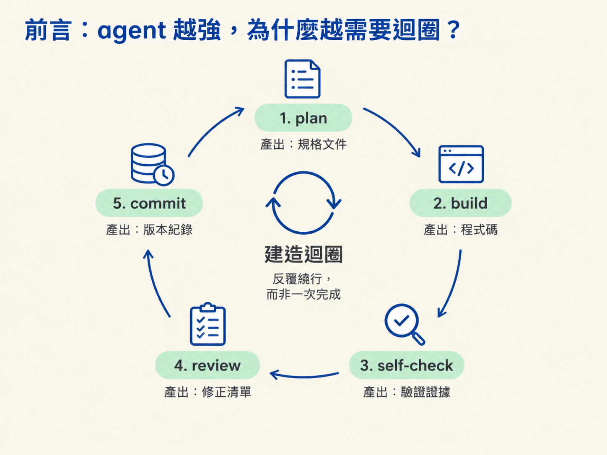
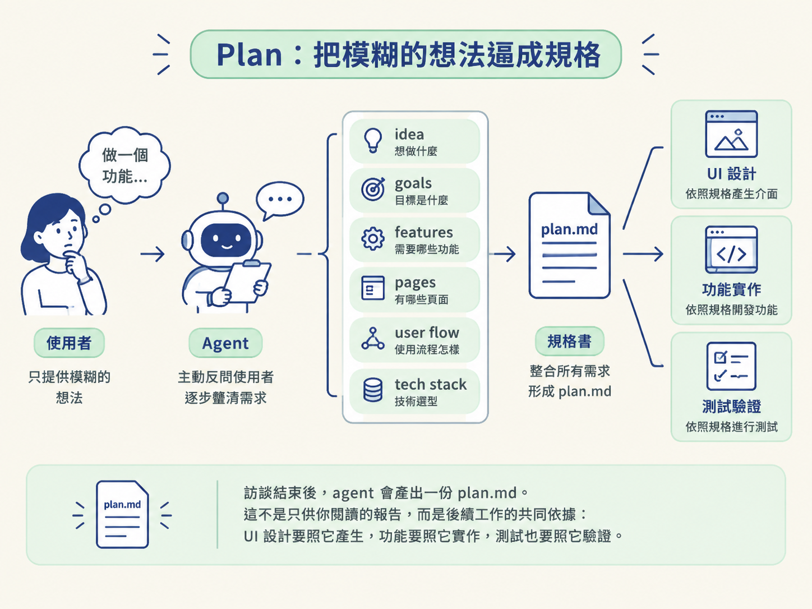
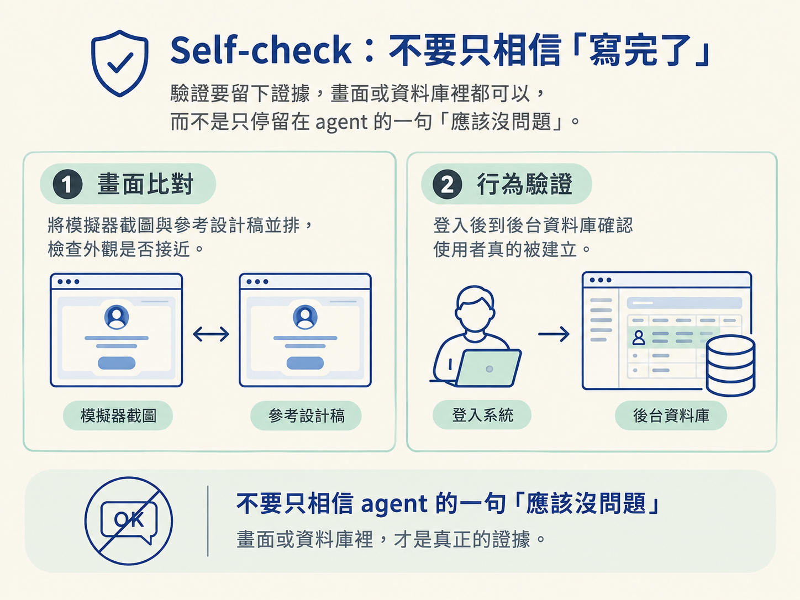
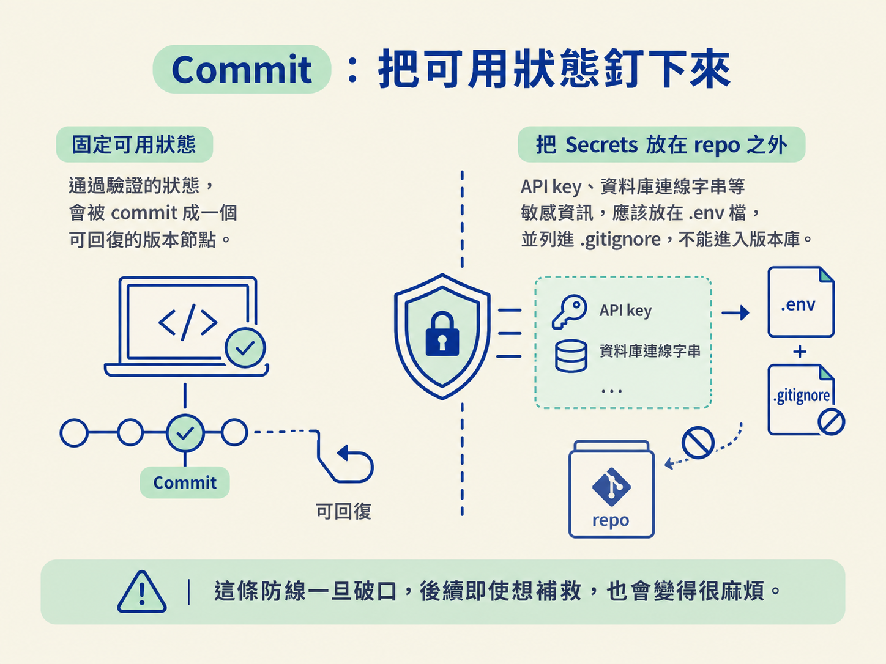

看完這一節，你應該能說明 agent 建造迴圈的五個階段各自會產出什麼、為什麼不能任意跳過，以及 agent 會在什麼地方接手工作。
你可能遇過這種情況：請 AI agent 做一個功能，幾分鐘後它真的生出十幾個檔案。畫面看起來有模有樣，實際跑起來卻東缺一塊、西壞一角。等你回頭問「剛剛到底改了什麼」，它也未必能清楚說明。
問題通常不是 agent 不會寫程式，而是你們沒有一起走完一個完整的循環。只叫它往前衝，就像讓施工團隊沒藍圖就直接蓋房子：動作很快，方向卻可能從第一步就歪了。
這門課的方法論，可以收斂成一條反覆運轉的迴圈：先 plan，再 build，接著 self-check、review，最後 commit。完成一個功能後，再從下一個小目標重新繞一圈。
這套節奏聽起來很直觀，但初學者最常犯的錯，正是跳過其中某一段。因此這一節會先把五個階段攤開，說清楚每個階段應該產出什麼，以及跳過後會付出什麼代價。後面的三節，再分別深入其中幾個關鍵環節。

直接下指令容易失控，是因為語言裡的模糊會被 agent 忠實地放大。你心裡想的是「做一個登入頁」，agent 可能把它理解成「做出帳號與密碼欄位的畫面」；也可能理解成「接好 Google 登入、建立資料庫，並處理登出」。這兩種理解都說得通，但工作量與完成結果差距極大。
人類同事通常會先反問你，確認需求到底是什麼；agent 則很可能先開始動手。結果就是：它做出一大堆看似合理、實際上需要重工的內容。
建造迴圈的作用，就是用固定制度補上這個模糊。它把「一次做完整個 app」拆成「一次完成一個小功能」，而且每一圈都遵循同樣的節奏：先講清楚，再動手；做完驗證，再請人檢查；確認可用後，才把狀態存檔。
你可以把它想成寫一本書：先列大綱，再寫一個章節，讀一遍確認內容通順，請人校稿，最後存檔。如果跳過大綱就直接埋頭寫，到了第三章才發現方向錯了，前面的努力就得大幅重來。
這五個階段不是做過一次就結束的瀑布式流程，而是一個會反覆運轉的圈。每個功能的終點是 commit；完成 commit 後，立刻從下一個 plan 開始。如果某一段發現問題，就退回上一段修正，不要硬著頭皮把錯誤帶到後面。
| 階段 | 在做什麼 | 主要產出 | 跳過會怎樣 |
|---|---|---|---|
| Plan | 把想法整理成具體規格：目標、功能、頁面、使用者流程與技術堆疊 | plan.md | agent 只能靠猜測工作，直到方向錯了才發現 |
| Build | 一次只做一個畫面或功能，採取小步前進 | 可執行的程式碼 | 一次改動太多，出了錯也難以定位 |
| Self-check | 把程式跑起來、比對畫面，並手動測試真實行為 | 通過驗證的功能 | 壞掉的功能會被誤當成完成品，繼續流到下一階段 |
| Review | 換一個視角檢查正確性與安全性 | 修正清單與修正後的程式碼 | 安全與邏輯漏洞可能拖到後面才爆發 |
| Commit | 把可用狀態固定成一個可以回復的版本 | 一筆版本紀錄 | 改壞後難以退回，也無法追溯是哪一步出了問題 |
這張表最該看的是最後一欄。五個階段不只是把工作「做完」，還能讓錯誤更早被看見、更容易修正。下面逐一展開每個階段。
Plan 階段最重要的一句話是：如果連你都不知道要做什麼，agent 更不可能知道。
這個階段不是叫 agent 「幫我想一個方向」，而是讓 agent 反過來訪談你。課程裡的做法，是貼上一段「訪談式 plan mode」提示，讓 agent 一次提出三到六個問題，並且按照主題分批詢問，逼你把 idea、goals、features、pages、user flow 與 tech stack 都講清楚。
訪談結束後，agent 會產出一份 plan.md。這不是只供你閱讀的報告，而是後續工作的共同依據：UI 設計要照它產生，功能要照它實作，測試也要照它驗證。

正因為它是整個工作的源頭，課程才會反覆提醒：要完整看過 plan，再決定是否接受，不能只是按下 auto-accept 就放著不管。規劃做得好，後面的每一圈都會省力；規劃隨便，後面的每一圈都只是在償還前面欠下的技術債。
Build 階段的核心原則只有一個：小步前進。
agent 的上下文與注意力都有限。一次塞給它十個畫面，它很容易顧此失彼；一次只做一個畫面，才有餘裕把細節處理好。課程裡的節奏很一致：先做 authentication，再做 home，接著處理 profile、explore、chat。每個畫面各自走完一輪。
這裡還有一個初學者常常弄反的順序：先做 UI，再接真資料。手機端畫面可以先使用假資料或空狀態，等畫面接近設計稿、互動也順暢後，再把假的資料替換成真的資料。
原因很簡單：把資料接起來，通常比重構已經成形的畫面容易。如果一開始就同時處理 UI、資料流與後端行為，出了問題時，往往不知道是哪一層出了錯。
agent 說「完成」，通常只代表它把預期的程式碼寫完了，不代表程式真的能跑。因此每個功能完成後，都要實際啟動並驗證一次。
在手機 app 的情境裡，這項驗證可以分成兩層。第一層是畫面：把模擬器截圖與參考設計並排，比對外觀是否接近。第二層是行為：例如登入後到後台確認使用者真的建立，拍照上傳後到資料庫確認真的多出一筆紀錄。
課程裡有些驗證也可以交給 agent 自己執行。例如 onboarding 有十個畫面時，可以請 agent 自己操作、切換畫面，走到指定的目標畫面，減少人手點擊的時間。
但不論是人還是 agent 來操作，重點都一樣：驗證必須留下證據。證據應該出現在畫面上，或出現在資料庫裡，而不是只停留在 agent 的一句「應該沒問題」。

程式碼會動，不代表它正確，也不代表它安全。AI 可以在幾分鐘內產生上萬行程式，人幾乎不可能逐行檢查完，這正是課程把 AI code review 列為標準步驟的原因。
做法是開一個 pull request，讓 CodeRabbit 這類工具檢查每一行變更，找出安全性與邏輯問題，再把修正建議整批交回 agent 處理。
這裡有個重要的心態要調整：在 AI 時代，你的價值不只是把每一行程式寫出來，更在於判斷哪些內容可以合併進專案。agent 負責產出，你負責把關。
這個階段涉及的細節，包括分支、PR、CodeRabbit 與 secrets 防護，會留到後面的版控節點完整說明。現在先記住它在迴圈中的位置：self-check 確認功能能運作，review 則換一個視角，檢查它是否值得被留下。
一個功能通過 self-check 與 review 後，就應該 commit 一次。
Commit 有兩個重要作用。第一，之後如果改壞了，你有一個可以退回的版本。第二，回頭看歷史，可以知道每個功能是如何逐步演進的。
因此課程採用的節奏是「完成一個功能就提交一次」，而不是等幾十個功能都做完後才一次提交。後者一旦出錯，很難判斷究竟是哪一步造成問題。
Commit 前還有一條不能忘記的紀律：secrets 不能進 repo。API key、資料庫連線字串等敏感資訊，應該放在 .env，並且在 .gitignore 中排除。
這條防線一旦破口，後續即使想補救，也會變得很麻煩。

建造迴圈由 plan、build、self-check、review、commit 五個階段組成。Plan 把模糊的想法逼成規格，並產出 plan.md；build 一次只做一個小東西，先完成 UI，再接上真資料；self-check 用畫面與資料庫證明功能真的能運作；review 讓 AI 工具換個視角，找出安全與邏輯問題；commit 則把可用狀態固定下來，並把 secrets 擋在 repo 外。這不是一次性的瀑布流程，而是每完成一個功能，就重新繞一圈的工作節奏。
這條迴圈要跑得順，還有一個前提：agent 每次開啟新對話時，都要知道專案的規則。偏偏 agent 不會自動記得，除非你把規則寫在它一定會讀到的地方。
下一節就來看 AGENTS.md 與 CLAUDE.md：這兩份檔案就像寫給 agent 的專案說明書，讓它每次接手工作時，都能先對齊同一套慣例。